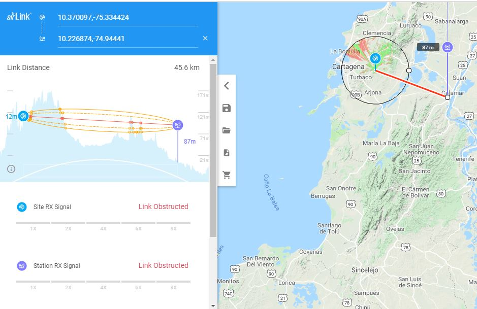
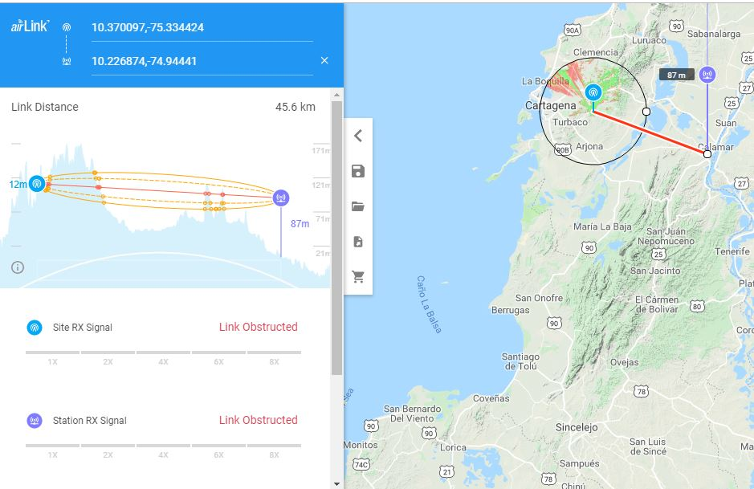

Si eres un apasionado por crear conexiones a larga distancia y saber que nivel de interferencia existe en una distancia lugar determinado, esta herramienta es para ti. AirLink es propiedad de Ubiquiti, por tal motivo recomienda sus dispositivos.
Si eres un apasionado por crear conexiones a larga distancia y saber que nivel de interferencia existe en una distancia lugar determinado, esta herramienta es para ti. AirLink es propiedad de Ubiquiti, por tal motivo recomienda sus dispositivos.
© Untitled. All rights reserved. | Photos by Fotogrph | Design by Andrés David Mejía Martínez.